The Basics of Sound, Audio, and Digital Audio
Written by Daniel Dehaan, 2023-09-12
- Table of Contents
What is Sound?
We experience sound as a physical force in the real world (the space our bodies occupy).
When an object moves, it pushes on the surrounding air molecules. Which, in turn, push against their surrounding air molecules. Which push against their surrounding air molecules. And so forth. This outward moving force creates a wave of higher air pressure that emanates throughout the surrounding space. Once that initial wave of higher air pressure passes, like a pendulum, the air molecules stretch back toward their starting position, resulting in a wave of low air pressure. If the sounding object continues to vibrate, the air will be filled with alternating waves of high and low air pressure.
/Sound-Waves-Animated.gif)
Note
Frequency & Amplitude
We can describe a sound by how quickly the air pressure changes from high to low (Frequency) and how significant the changes in air pressure are (Amplitude).
Frequency (Pitch): The frequency of a sound is determined by how many times it cycles between high and low air pressure within one second. It is typically measured in Hertz (Hz), with one Hz being equivalent to one cycle per second. The frequency of a sound wave is what we perceive as its pitch. In other words, a sound wave with a high frequency will be heard as a high-pitched sound, while a sound wave with a low frequency will be heard as a low-pitched sound.
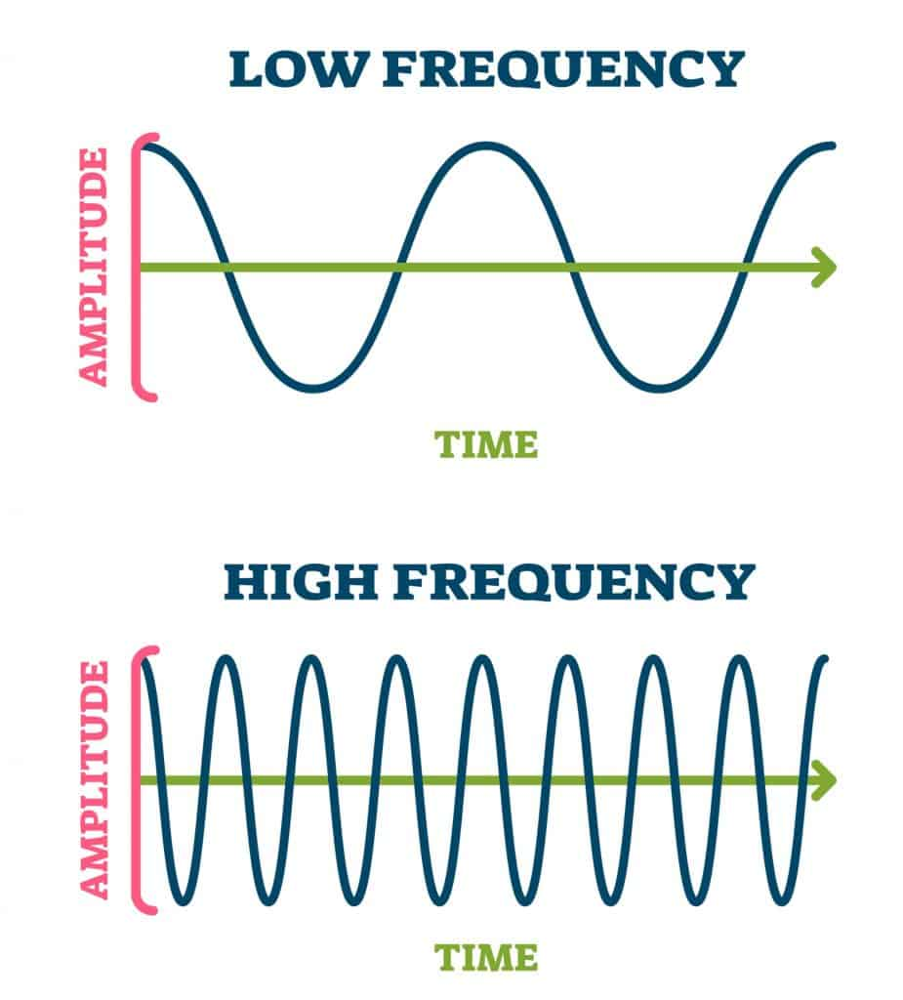
Amplitude (Volume): Amplitude is a measurement of the difference between the positive/maximum (high) air pressure and the negative/minimum (low) air pressure. The greater the difference, the higher the amplitude. The higher the amplitude, the louder a sound is perceived to be.
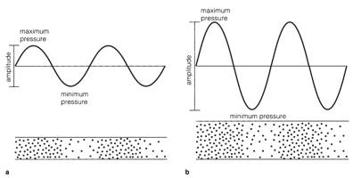
Measuring Amplitude (Decibels)
Decibels are a Unit of Comparision.
Decibels (dB) is the unit we use to compare the loudness of a sound against another. So, unlike other units of measurement that you might already be familiar with (e.g. inches, cups, miles-per-hour), a specific dB does not indicate a specific air pressure. Instead, the dB scale is relative, which means it measures how much louder or quieter one sound is compared to another. For this reason, 0 dB doesn’t mean there’s no sound; it’s just a reference point, like saying something is this much taller than another doesn’t tell you how tall either thing is, just the difference between them.
If we decide to label the quietest sound we could hear with our ears as 0 dB, then a whisper would be around 20 dB, a normal conversation would be around 60 dB, and very loud sounds like a rock concert could be over 120 dB.
The Decibel Scale is Logarithmic
Our ears don’t hear volume changes in a linear way, so the dB scale is logarithmic to match. That means each step up is actually 10 times more powerful! For example, a sound at 30 dB is ten times louder than a sound at 20 dB, and a sound at 40 dB is a hundred times louder than a sound at 20 dB. But our ears don’t hear it as a hundred times louder, because our ears don’t hear changes in loudness evenly. That’s why decibels help us understand loudness in a way that more closely matches how our ears actually perceive changes in volume.
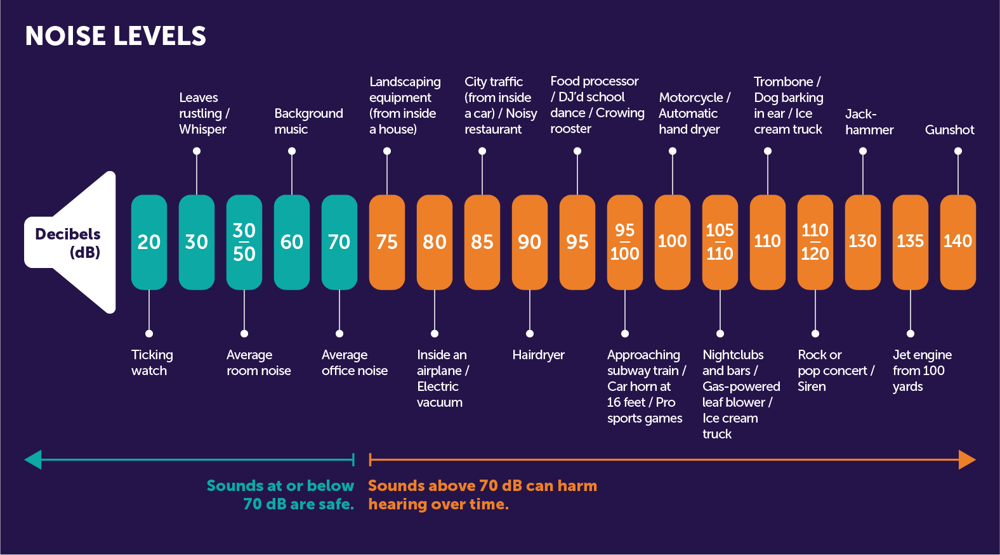
Phase
Phase describes where a repeating sound wave is at for a specific moment in time in relationship to its movement from positive to negative air pressure. Often, this is described using degrees where 0º means that it is at the start of its cycle, 180º it is halfway through, and 360º indicating that it is at the end of its cycle (which would be the same as 0º).
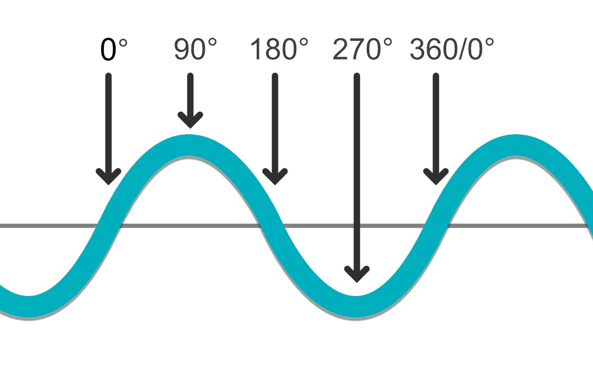
Phase becomes really important when two or more sounds, or recordings, are combined together. Consider, for example, the image below, which shows two situations. In the first situation, two identical sound waves are playing simultaneously. However, if you look closely, the lower sound wave is 90º out of phase with the upper. When combined together, the resulting sound would be half as loud as the original.
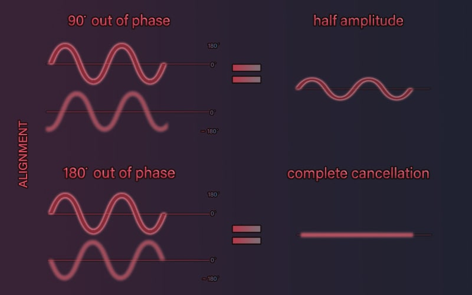
Note
Look at the second example in the image above, where the two waves are
180ºout of phase with each other, and see if you can understand why this would result in perfect silence.
How do our ears work?
Our ears work a lot like microphones, they translate perceived changes in air pressure to electrical signals.
The outer part of our ears is called the pinna, and it is responsible for funneling most of the vibration around us into the ear canal and toward the eardrum. The eardrum is a thin, cone-shaped membrane that moves in response to the captured air pressure changes and relays those vibrations to three bones in the middle ear: the hammer (malleus), anvil (incus), and stirrup (stapes). These bones amplify the vibrations before they reach the cochlea, a snail-shaped structure filled with fluid, in the inner ear. Vibration causes the fluid inside the cochlea to ripple, and the motion is detected by hair-like cells, called stereocilia. Despite the name, they are not actually hairs or cilia, but rather elongated microvilli, which are specialized cellular structures that translate physical vibration into electrical signals (kinda like a microphone). These signals are passed through the auditory nerve to the brain, which interprets them as sound.
/EarPathway.gif)
Note
Everything is rhythm, so why do I hear pitch?
The human ear typically hears frequencies (pitch) ranging from 20 Hz on the lower end to around 20,000 Hz (or 20 kHz) on the upper end. As we age, we tend to experience a decreased sensitivity to higher frequencies. If we aren’t careful, exposure to loud sounds can result in hearing loss sooner!
Why we hear this specific range of frequencies involves our perception of time and the physical limitation of our ears.
Lower Frequencies
Something that is happening slower than 20 times per second (20 Hz), we begin to perceive it as a pulse or rhythm. Anything happening around 20 times per second or faster, we perceive as a tone.
Higher Frequencies
For higher frequencies, it is simply a question of the physical abilities of our ears to sense those frequencies and how much hearing loss has already occurred.
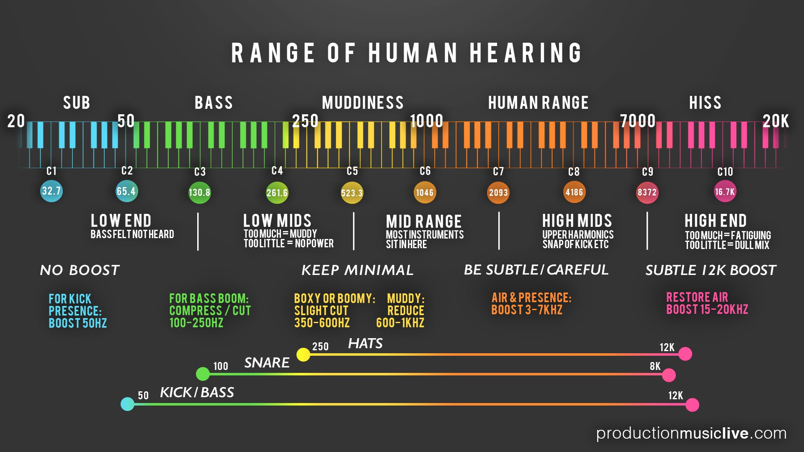
Sound vs. Audio
While “sound” and “audio” are often used interchangeably, they do have slightly different meanings in a technical context.
Sound refers to the mechanical waves of pressure and displacement, propagated through a medium (most commonly air) that our ears perceive. It is a physical event, involving variations in air pressure that our ears translate into different pitches, loudness levels, and tones.
Audio, on the other hand, refers to the recording, reproduction, or processing of sound, usually in a manner that humans can perceive. “Audio” is more closely associated with the technology and techniques used to capture, manipulate, and playback sound.
Audio Cables
Audio cables can be categorized into two major groups, balanced and unbalanced, each consisting of common types used in various audio applications. Typical uses often depend on the environment (professional or consumer), the distance, and noise conditions.
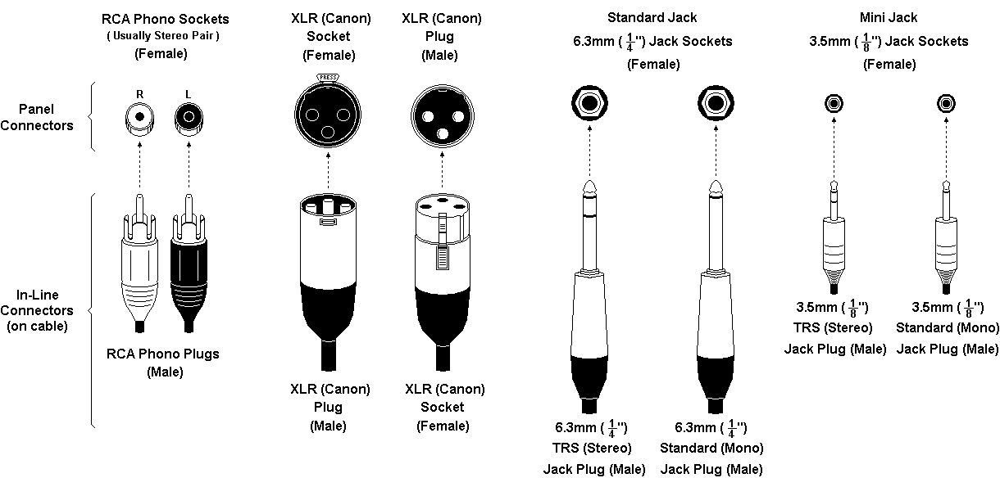
Unbalanced Audio Cables
The most common types of unbalanced cables are:
- RCA Cables: Often used for connecting consumer audio and video equipment like DVD players, TVs, and stereo receivers. They’re also used with several professional audio devices.
- TS (Tip-Sleeve) Cables: These are typically used with instruments, such as connecting a guitar to an amplifier. They come in both 1/4” and 1/8” sizes, with the smaller size often used for headphones in consumer equipment.
Unbalanced cables contain two conductors: a signal and a ground. While they are more susceptible to interference and noise, especially over longer runs, their simplicity and cost-effectiveness make them common in consumer-level devices.
Note
In addition to this, the ground wire also provides a pathway to direct any unwanted or stray electrical noise to the ground or earth, away from the audio equipment. This can help minimize interference and hum caused by electrical noise.
Balanced Audio Cables
The most common types of balanced cables are:
- XLR Cables: These cables are commonly used in professional audio applications, including microphones, mixers, and high-quality speakers. They’re designed for long-distance runs and noisy environments due to their noise-cancellation properties.
- TRS (Tip-Ring-Sleeve) Cables: These are used in a variety of contexts, such as connecting balanced equipment, sending stereo signals, or used as headphone cables in high-end equipment. The 1/4” TRS cables are often used for mixer and interface outputs, while the 1/8” TRS cables are often found in professional-grade headphones.
Balanced cables contain three conductors: a positive signal, a negative signal, and a ground. They offer the advantage of noise and interference rejection, which makes them more suitable for professional audio applications and environments with potential interference.
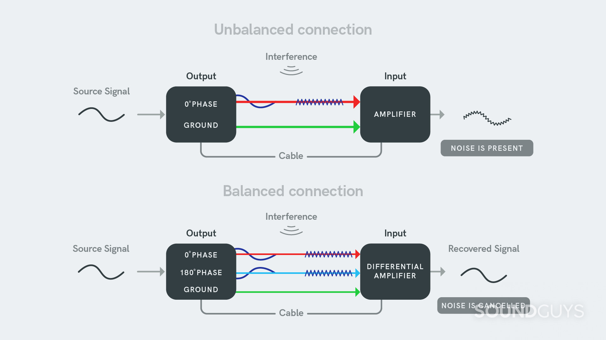
Remember that balanced cables will not improve the sound quality of unbalanced gear; rather, it will help combat potential noise and interference in certain setups.
Note
Yes, you can connect an unbalanced cable to a balanced input or output, but there are some things to consider:
When connecting an unbalanced cable to a balanced input, the wiring typically connects the signal wire (usually the center pin) of the unbalanced cable to the positive (also called ‘hot’) input of the balanced connection, and the ground wire to the negative (‘cold’) and ground inputs.
If you connect an unbalanced output to a balanced input, you lose the noise-cancelling benefits of a balanced connection, because the noise cancellation happens through the phase inversion and summation in the balanced section of the connection, which doesn’t occur in an unbalanced connection.
There are adapters that can make this connection easy, or even active boxes (like DI boxes) that will convert an unbalanced signal to a balanced one, which can provide much better performance, particularly over long cable runs.
If you’re dealing with a balanced output and an unbalanced input, you need to be a bit more careful, as simply hooking up the balanced output using an unbalanced cable can sometimes result in lower signal level, or even potential distortion or equipment damage, depending on the specifics of the gear in question.
In general, though, it’s safe to say you can connect balanced and unbalanced gear together. Just keep in mind that you may not get all the benefits that balanced connections typically offer. Be sure to check the specifics of your devices if you’re unsure.
Microphone Types
A microphone is a device that transforms acoustic energy, or sound waves, into electrical signals through a transducer, allowing the sound to be amplified, recorded, or transmitted. There are many types, such as dynamic microphones, often used in live situations for their durability, and condenser microphones, favored in studio recording for their high sensitivity and accurate sound reproduction. Some microphones, notably condenser ones, require an external power source, or “phantom power,” often 48V, to operate their active components. However, not all microphones require phantom power, and for some, like certain ribbon microphones, phantom power can cause damage, so understanding each microphone’s specific requirements is crucial.
Note
The most common form of phantom power is
+48V, sent over the same wires that carry the audio signal within a cable. This voltage powers the active electronics inside devices like condenser microphones.Audio interfaces, mixers, or dedicated external power supplies usually supply phantom power. Not all audio devices require phantom power, and some can be damaged by it (such as certain types of ribbon microphones), so it’s important to know whether your specific device needs it.
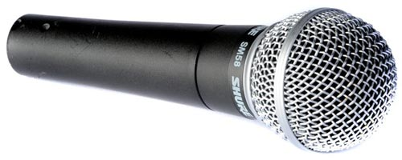
- Dynamic Microphones: Used in live sound situations due to their durability. They work by using a magnet and a diaphragm to create an electrical signal in response to sound wave motion. Dynamic microphones do not typically require phantom power.
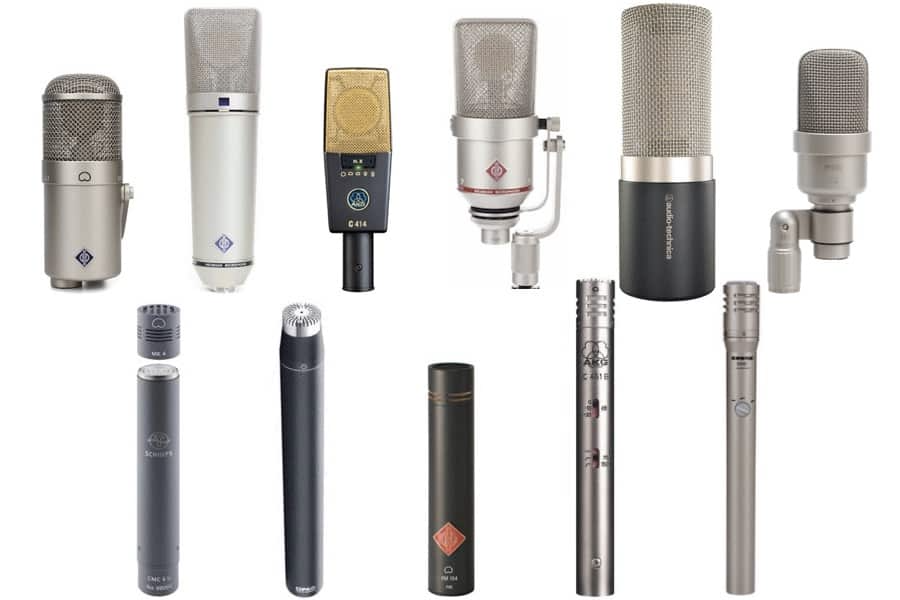
- Condenser Microphones: Known for their sensitivity and accuracy in recording studios. They work by fluctuating electrical capacitance between two plates, where one acts as a diaphragm in response to sound waves. These microphones do require phantom power for their operation.
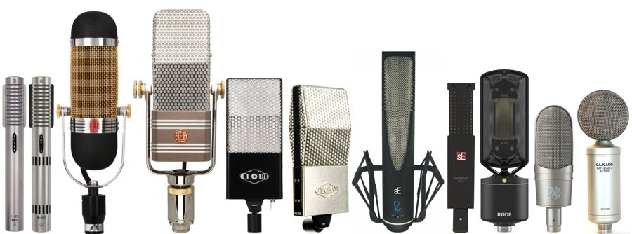
- Ribbon Microphones: Primarily used in studio settings to capture delicate sound. They work by passing a thin metal ribbon in a magnetic field, which induces an electrical current proportional to the sound waves hitting it. Traditional ribbon mics do not require phantom power and can potentially damage some models, but some modern ribbon mics are designed to use phantom power safely.
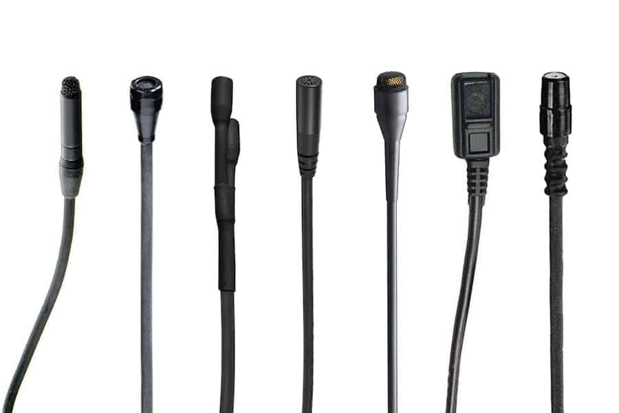
- Lavalier Microphones: Small microphones used in broadcasting, theatre, and presentations. They work on the same principles as dynamic or condenser mics (depending on their design) but are miniaturized for discrete use. The need for phantom power depends on the type — condenser lavalier mics require phantom power, but dynamic ones do not. Wired lavalier mics often use a battery-powered belt pack.
Polar Pickup Patterns
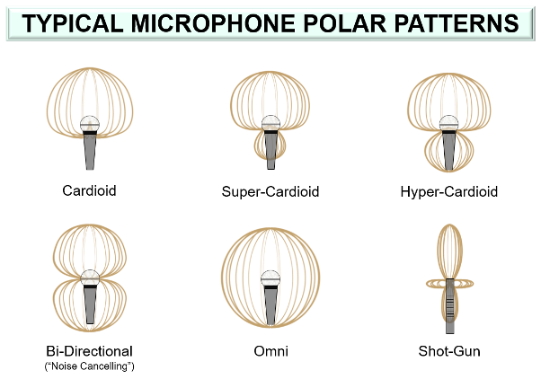
A microphone’s polar pickup pattern, also known as its directional pattern, represents its sensitivity to incoming sound waves from different directions. In simpler terms, it shows where the microphone “listens” best. Some common types include:
- Omnidirectional: Picks up sound equally from all directions.
- Cardioid: Picks up most sound from the front and rejects sound from the back.
- Bidirectional or figure-eight: Picks up sound equally from the front and back but rejects sound from the sides.
The appropriate pattern is chosen based on the recording situation and the specific audio that needs to be captured.
Frequency Response Charts
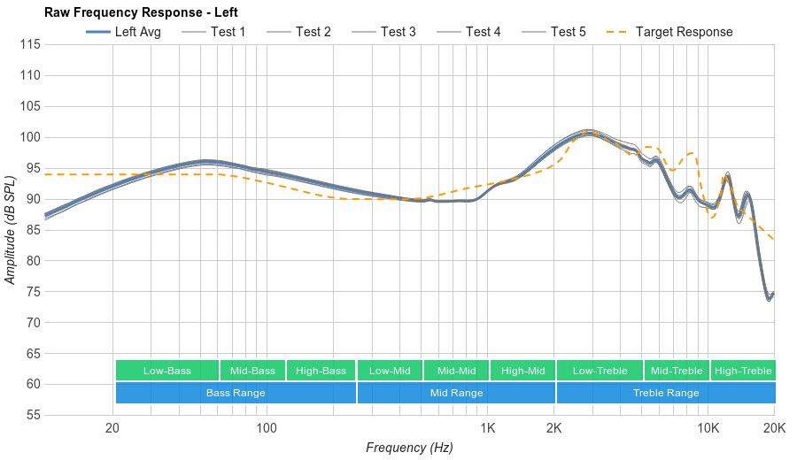
A frequency response chart for microphones and other audio equipment visually demonstrates how a particular device responds to different frequencies of the audio spectrum. It portrays the device’s sensitivity or output across a range of frequencies, typically shown as a graph with frequency on the horizontal axis and output level on the vertical. This chart is crucial because it illustrates the tonal characteristics of the equipment: some frequencies may be accentuated (boosted), while others may be attenuated (reduced), contributing to the overall ‘sound’ of the device. Therefore, frequency response charts can be used to compare and choose microphones and other audio equipment based on their performance across the audible frequency range.
Mic Preamps
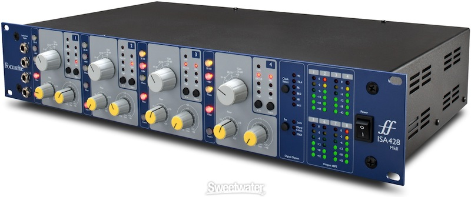
A microphone preamplifier, often known as a ‘mic preamp,’ plays a crucial role in audio recording and reinforcement. Its primary function is to amplify the typically weak electrical signal generated by the microphone to a level strong enough for further processing, recording, or broadcasting. By boosting the signal, a preamp ensures that the nuances and details of the original sound are faithfully captured, minimizing the noise and distortion that can be introduced during the amplification process. Furthermore, a good preamp contributes to the overall tonal character of the sound, making it an essential tool in various professional audio applications.
Note
Analog vs. Digital
The terms “analog” and “digital” describe two methods of representing audio signals:
Analog representation involves a continuous signal that mirrors the original sound wave. It’s the method used in vinyl records and cassette tapes. Theoretically, it can capture the exact audio waveform, but in practice, it’s more prone to degradation and noise.
Digital representation involves capturing the audio signal by taking a series of measurements (sampled data) at distinct time intervals and then expressing each measurement as a binary number. Digital audio, used in CDs, MP3s, and other modern formats, is more resistant to noise and degradation, can be copied indefinitely without loss, and can be more easily edited and manipulated with software.
Audio Interfaces
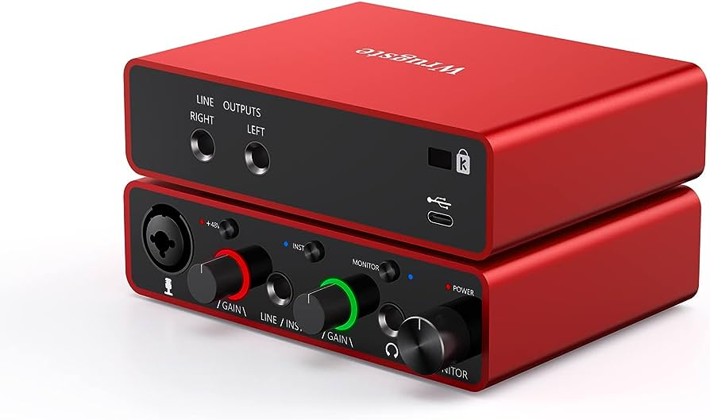
An audio interface is a key piece of equipment in digital audio production. It essentially acts as a bridge between your computer and the external audio equipment, such as microphones, studio monitor speakers, and musical instruments. Audio interfaces convert the analog signals from these devices into digital data for your computer to process.
The interface can also do the reverse, converting digital audio data from your computer into an analog signal that can be played through speakers or headphones. It provides you with inputs for your microphones or instruments, outputs for speakers or headphones, and often includes a microphone preamplifier to boost the typically weak microphone signals.
Analog-to-Digital Conversion (ADC)
Converting an analog audio signal into a digital format is known as Analog-to-Digital Conversion (ADC). The ADC process mainly involves two critical steps: sampling and quantization.
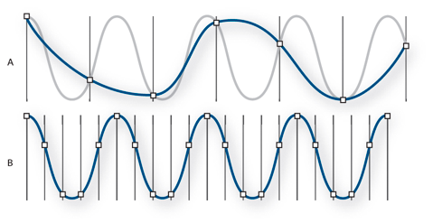
Sampling: In this step, the continuous audio signal is measured at regular intervals, resulting in a series of snapshots or “samples.” The rate at which the samples are taken is called the sampling rate. A common sampling rate in audio recording is 44.1 kHz, which means 44,100 samples are taken per second. The Nyquist-Shannon sampling theorem dictates that the sampling rate should be at least twice the highest frequency you want to record to represent the signal accurately.
Bit 1: _ (0, 1)
Bit 2: _ _ (00, 01, 10, 11)
Bit 4: _ _ _ _ (0000, 0001, 0010, 0011, 0100…1111)
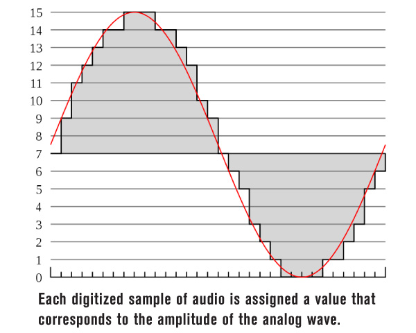
Quantization: After sampling, each sample is converted or “quantized” into a digital format, usually a binary number. The bit depth determines the resolution of each sample - the higher the bit depth, the more accurately the sample represents the original analog signal at that point in time. Common bit depths in audio recording are 16-bit and 24-bit.
Once the audio signal has been sampled and quantized, the resulting digital data can be stored, manipulated, or played back by a digital audio system.
It’s worth noting that to play back digital audio, the process needs to be reversed using Digital-to-Analog Conversion (DAC). This converts the digital samples into a continuous analog audio signal, which can be fed into an amplifier and then to loudspeakers or headphones.